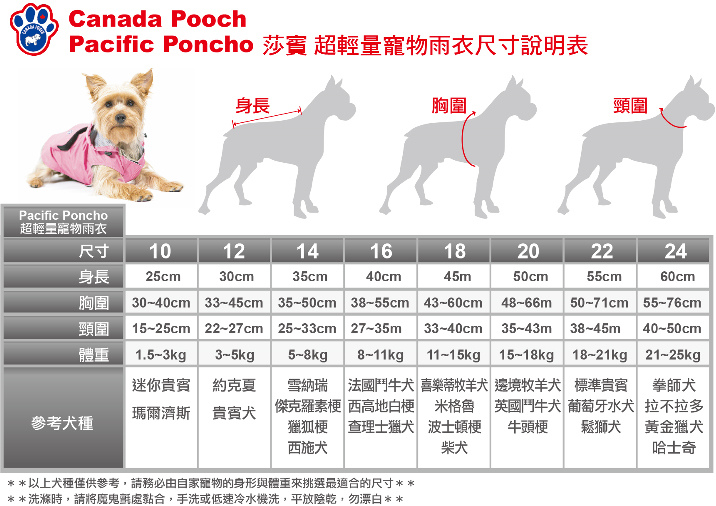

去年底收到莎賓邀請他們新推出的胸背＆風衣的試用
因為年底出去玩樂的行程真的很多，有follow卡卡家就知道 年底玩很大 哈哈
今年才來交作業，但胸背因為尺寸的問題就沒有接試用（反正沒試用就不多聊）


頸圍：45cm
胸圍：55cm
身長：52cm

此款有六個顏色可選擇，藍＆綠是我會想買的顏色，顏色跳又耐髒(?)
小藍帽好可愛，但帽子這東西算雞勒(?)只限定點拍照用
我還沒看過帽子跑一跑不會掉或被小短手撥落der XD

長度也很剛好，可以遮到屁屁尾端

頸部特寫

但這個尺寸，側腹肚魔鬼氈黏到最緊還是有點ㄌㄤ～ㄌㄤ～

莎賓這款主打輕量防風防水功能，不單只是雨衣，所以吸引我
卡卡是願意在家廁所便溺的孩子
家裡也有準備件雨衣，但幾乎用不到...因為下雨媽媽根本就不想出門啊 哈哈
所以以前買的雨衣到現在穿的次數不超過三次
但這款風衣雙層設計，內裡有加層透氣層（一般雨衣沒有）
因此就算是晴天也適合外出使用
秋冬季節外出我一定會幫卡卡穿衣服

最近有時溫度不是太冷我就會直接幫卡卡穿這件防風衣擋風
穿衣服除了是媽媽個人西花愛現之外，
最最最重要是，帶卡卡出門我會讓他好好放鬆嗅味，除非太髒的環境否則我不會制止他
但這小王八蛋尿尿非常龜毛又很愛蓋人家台
常常看他為了要蓋台，在別的狗狗剛尿過的地方，身體滑過來又滑過去的（崩潰）
（大家的寶貝都會醬嗎！？還是這一切都是因為腿太短.....XDDDD）
這就是為何出門我一定要幫他穿衣服，沾到別的狗狗的尿我真的只想立馬回家洗狗
穿上這件風衣老木只要洗衣服就好，而且這件風衣好清洗又容易乾
陰乾後隔天立刻又可以再穿出門
就算突然遇到下雨也不怕身體濕掉，很不錯 

年底去了台東、墾丁都帶著這件，結果一滴雨也沒下（證明我家不是雨神，都是被抹黑的 XD）
測不到下雨的效果
就實際用水沖，它是真的防水，顏色變深看起來好像濕了，其實內層還是乾的


剛有提到這個尺寸20號不太符合卡卡身型，因為腹部的位置太鬆了（ 魔鬼氈己黏到最緊）
某次穿上杯具果然發生 哈哈哈

卡卡尿完，猛哥發現地上沒有尿覺得怪
原來....整泡都被卡卡自己接到衣服上帶走了 
你以為這件是尿布嗎!!!! 許摩卡

卡卡體重 12.2kg 頸圍：45cm 胸圍：55cm 身長：52cm
參考下面官網的尺寸，以卡卡頸圍來說，是要選20號（廠商給的沒錯）但腹部就很鬆 
柯基身材很難買衣服......
真心希望愈來愈多廠商可以考慮出CG尺寸，專門for corgi 
所以想買的朋友建議最好可以去試穿看看嘍！搞不好18號更剛好
購買網址  莎賓 超輕量寵物風衣
莎賓 超輕量寵物風衣
